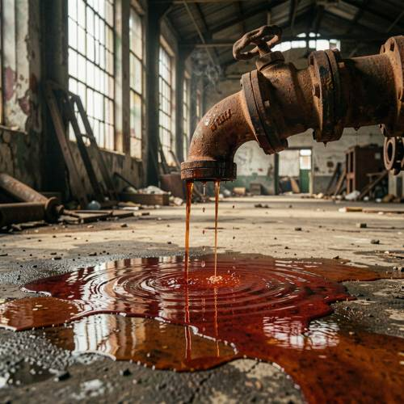
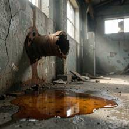
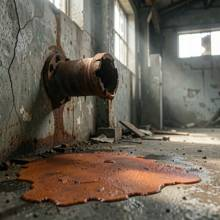

Action — In the abandoned factory, a broken rusty water pipe was dripping with
In the abandoned factory, a broken rusty water pipe was dripping with water and landed on a pool of solidified, also rust-colored oil stains below. The colors of the two were surprisingly similar, full of realistic style with a movie texture.

Direct — one call, no iterationContinuum — Kimi K3 + FLUX.2-klein-9B
Judge — Direct
FAILAction - Contact Interaction — The image shows a liquid dripping from a pipe and landing in a pool of liquid on the floor, creating distinct ripples. The prompt specifies that the liquid lands on 'a pool of solidified... oil stains'. Since the surface it lands on is visibly a liquid and not solidified, the described contact interaction is not accurately represented.
FAILCompound - Feature Matching — The image shows a large, rusty pipe that is leaking, which aligns with 'broken rusty water pipe'. However, it also shows a pool of liquid on the floor with ripples and reflections. This contradicts the prompt's description of a 'pool of solidified, also rust-colored oil stains', as the substance on the floor is clearly a liquid, not solidified.
PASSStyle — The image exhibits a high degree of realism with detailed textures on the rusty pipe, the concrete floor, and the liquid. The composition, lighting, and color palette give the image a dramatic, cinematic quality, which aligns with the 'realistic style with a movie texture' requirement.
PASSAction - State — The image clearly shows liquid falling in streams from the opening of the rusty pipe. This visual evidence directly corresponds to the state of the pipe 'was dripping'.
PASSRelationship - Similarity — The liquid shown dripping from the pipe is a reddish-brown, rust color. The pool of liquid that has collected on the floor below is of a virtually identical reddish-brown, rust color. This fulfills the requirement that 'The colors of the two were surprisingly similar'.
Judge — Continuum
PASSAction - Contact Interaction — The image depicts a drop of liquid falling from a pipe toward a pool on the floor. A small disturbance or ripple is visible in the pool directly below the drop, suggesting a previous drop has just landed.
PASSCompound - Feature Matching — The image features a large, broken pipe covered in rust, protruding from a cracked concrete wall. Below it, on the floor, is a large pool of a rust-colored substance. While the prompt describes the pool as "solidified oil stains," the image shows a liquid pool, but the other features—broken, rusty pipe and rust-colored pool—are accurately depicted.
PASSStyle — The image exhibits a realistic style with high-detail textures on the rust, concrete, and liquid. The lighting, characterized by beams of light cutting through a hazy, dark interior, combined with the focused composition, gives the scene a cinematic or "movie texture" quality.
PASSAction - State — The image clearly shows the state of the water pipe dripping, with a single drop of liquid captured in mid-air as it falls from the edge of the broken pipe.
PASSRelationship - Similarity — The color of the liquid dripping from the pipe is a brownish, rust-like hue, which is nearly identical to the color of the large pool of liquid on the floor, fulfilling the requirement for surprising color similarity.
What the agent did
Thinking
We need need respond likely generate image per benchmark. Need always flux2-klein, generate then inspect, edit while clearly wrong. We need infer desired dimensions fixed harness? User no size. Default 1024 square perhaps. Need create image matching. Prompt cinematic abandoned factory broken rusty pipe dripping water onto puddle of solidified rust-colored oil stains below; colors similar, realistic movie texture. Need generate. Then inspect maybe image itself visible output. Could call generate. Need not set seed. Let's draft rich visual. Maybe aspect? no fixed. Use 1024x1024. Need perhaps water dripping but pool "solidified" ambiguous glossy hardened stain. Similar rusty orange-brown colors. Movie texture. Let's generate.
Step 1 — `generate_image`
{
"prompt": "A photorealistic cinematic close-up inside an abandoned industrial factory: a broken, heavily rusted metal water pipe juts from a cracked concrete wall, its jagged opening dripping a single droplet of water. Directly below, a hardened puddle of solidified oil stains spreads across the rough concrete floor in rust-orange and dark amber tones, visually echoing the corrosion on the pipe. Damp surfaces, faint reflections, chipped paint, corroded bolts, dust, and scattered debris. Moody natural light enters through broken high windows in soft dusty shafts, with deep shadows and gritty film texture, realistic movie still, shallow depth of field, highly detailed.",
"width": 1024,
"height": 1024,
"model": "flux2-klein"
}
Result img_0

Thinking
We need inspect. Image quite good. Prompt asks broken rusty pipe dripping with water and landed on pool of solidified rust-colored oil stains. Here droplet and stream land into glossy liquid oil, not solidified necessarily but pool. Colors similar. Need maybe "solidified" would look hardened/viscous not liquid. Yet user wording weird. Could edit puddle to hardened matte/rough crust, while water drip landing on it. Need maybe movie texture yes. Everything there. Mark best immediately. Then perhaps one edit to make puddle solidified? But risk. User expects image likely can be good. We should maybe use inspect_region on droplet/pool? At full image text not relevant. We can visually inspect. We need follow procedure, mark best as soon as willing. Mark img_0. Then assess if clearly wrong: it's a pool of liquid, not solidified. The user explicitly says solidified oil stains, but perhaps oil stains can be glossy. We could targeted edit puddle to "solidified, waxy, cracked rust-colored oil crust with subtle sheen" while preserve. Need be careful. This would make it match more. But if edit changes rest maybe okay. Yet the phrase "landed on a pool of solidified oil stains" contradictory pool solidified. We can create a hardened uneven amber-rust crust. Use edit_image. The result is strong and maybe don't over-edit good result. Stopping says good enough. The pool's oil is liquid, while request is solidified. Is that clearly wrong? It is a liquid puddle; user explicitly asked solidified. Could make one edit. Need maybe "Transform the glossy liquid puddle into a hardened rust-orange oil stain with a matte, uneven, slightly cracked surface, while keeping the falling droplet touching it." This is single entity edit. Let's mark first.
Step 2 — `mark_best`
{
"image": "img_0",
"reason": "Strong cinematic abandoned-factory composition with a broken rusted pipe, visible dripping water, matching rust-colored stain below, realistic textures, and moody lighting."
}
Thinking
Should edit or stop? We have marked. "Stop when every element ... present and correct". Solidified not exactly. Edit to harden. Could risk and if worse keep img0 mark. Let's do.
Step 3 — `edit_image`
{
"image": "best",
"prompt": "Transform the glossy liquid puddle on the floor into a hardened, solidified rust-orange oil stain with an uneven matte crust, subtle cracks, and only a faint damp sheen where the falling droplet lands. Keep the droplet and everything else unchanged.",
"model": "flux2-klein"
}
Result img_1

Thinking
This is better, hard crust, same. Need mark best img1. Maybe inspect? It shows pipe, droplet, hardened stain, similar colors, cinematic. Good. Mark. Then final concise.
Step 4 — `mark_best`
{
"image": "img_1",
"reason": "Best match: the rust-colored oil deposit now reads as solidified and textured while the broken rusty pipe continues dripping onto it, preserving the realistic abandoned-factory setting and cinematic mood."
}
Model
Created the cinematic abandoned-factory scene with a broken rusty pipe dripping onto a solidified rust-colored oil stain.